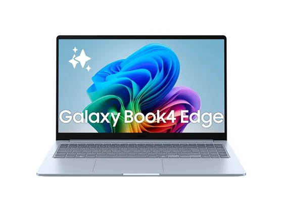
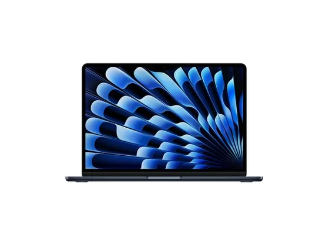
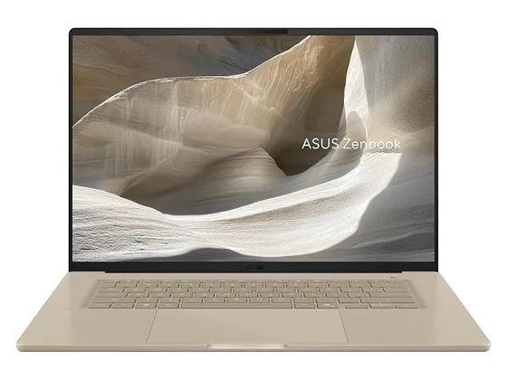
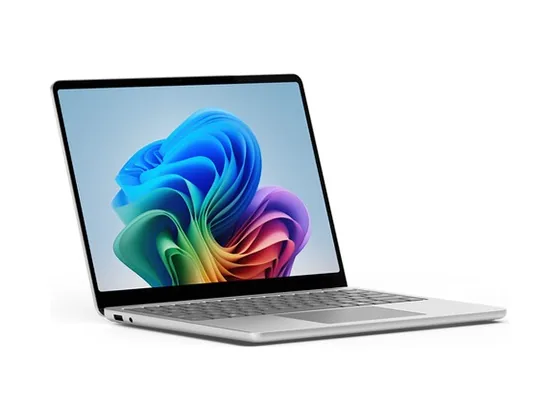

Samsung Galaxy Book4 Edge 15 : avis, tests et prix
Le verdict en une phrase. Fin, endurant et bien intégré à l'écosystème Samsung. Un bon PC de travail, à choisir surtout si vous avez déjà un téléphone Galaxy.
N° 5 sur 10 dans le top 10 PC portables bureautique.

Pour qui ?
Vous avez déjà un téléphone Galaxy et voulez un 15 pouces fin et endurant qui s'y connecte bien.
Vous dépendez de logiciels dont la compatibilité ARM n'est pas garantie.
Le consensus de la presse
Sur 16 notes, 13 atteignent ou dépassent 8/10. La plus haute : 8,5/10 (Notebookcheck) ; la plus basse : 6,0/10 (Chip.de). Ces notes portent sur la gamme : configurations ou générations proches de celle vendue aujourd'hui. Dernier test relevé : février 2026.
Où l'acheter
La configuration peut différer d'un marchand à l'autre : vérifiez la fiche avant d'acheter. Seuls les liens Amazon sont affiliés à ce jour ; les autres sont de simples liens directs. Aucun n'influence les notes ni le classement.
Tous les tests recensés
Chaque ligne renvoie vers le test d'origine. Les notes sont converties sur 10 ; « test » signale un article sans note chiffrée. Notre méthode.
- Notebookcheck8,5
- Notebookcheck8,2
- Notebookcheck8,1
- Chip.de8,0
- Chip.de8,0
- Chip.de8,0
- Expert Reviews8,0
- Frandroid8,0
- Geeknetic8,0
- ImTest8,0
- Notebookcheck8,0
- T38,0
- TechRadar8,0
- The Verge7,0
- Chip.de6,0
- Labo Fnac6,0
- Basic Tutorialstest
- ChinaHandystest
- ComputerBasetest
- Connect.detest
- Digital Trendstest
- PCWorldtest
- Trusted Reviewstest
- Tweakerstest
- Tweakerstest
- Wiredtest
Source du relevé : Synthèse CommentChoisir.
Les alternatives pour le même usage
Tout le top 10 →
Apple MacBook Air 13" M5Silencieux, rapide et endurant : la puce M5 et le SSD plus véloce en font la référence des ultraportables, si l'écran 60 Hz ne vous gêne pas. N° 4 · Le grand écran poids plume
Asus Zenbook A16Un 16 pouces OLED de 1,2 kg à l'autonomie remarquable : idéal pour travailler confortablement sans s'alourdir. Les versions X2 Elite sont nettement plus chères. N° 6 · Le plus soigné
Microsoft Surface Laptop 13"Petit, léger, très bien fini et toujours silencieux : un compagnon de travail agréable, mais vendu un peu cher pour son écran LCD.Questions fréquentes
Que pense la presse de l'ordinateur Samsung Galaxy Book4 Edge 15 ?
La note presse moyenne est de 7,7/10, calculée sur 16 notes (de 6,0 à 8,5/10). Fin, endurant et bien intégré à l'écosystème Samsung. Un bon PC de travail, à choisir surtout si vous avez déjà un téléphone Galaxy.
Quels sont les points faibles relevés par les tests ?
RAM et SSD non évolutifs ; Compatibilité logicielle ARM à vérifier ; Écran LCD sur le 15,6".
À qui s'adresse le modèle Samsung Galaxy Book4 Edge 15 ?
Vous avez déjà un téléphone Galaxy et voulez un 15 pouces fin et endurant qui s'y connecte bien. À éviter si : vous dépendez de logiciels dont la compatibilité ARM n'est pas garantie.
Où l'acheter, et à quel prix ?
Comptez environ 960 € (prix indicatif constaté en octobre 2026). Nous l'avons trouvé en vente chez Amazon et Darty. Les prix changent vite et la configuration peut différer d'un marchand à l'autre : seul le prix affiché par le marchand fait foi.